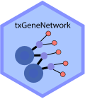

What is txGeneNetwork
An R / Bioconductor workflow on how to build Pathway-Gene-Transcript network from transcript expression data 🧬📊✨.
Installation
# install.packages("BiocManager") BiocManager::install("villabioinfo/txGeneNetwork")